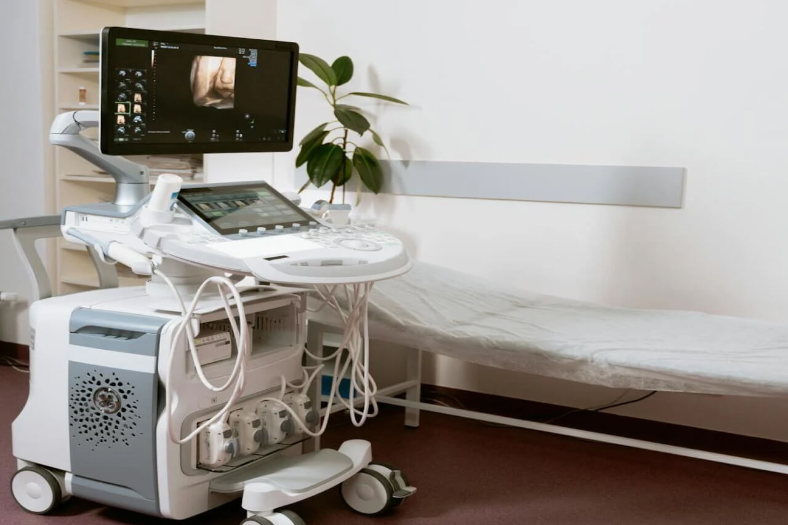
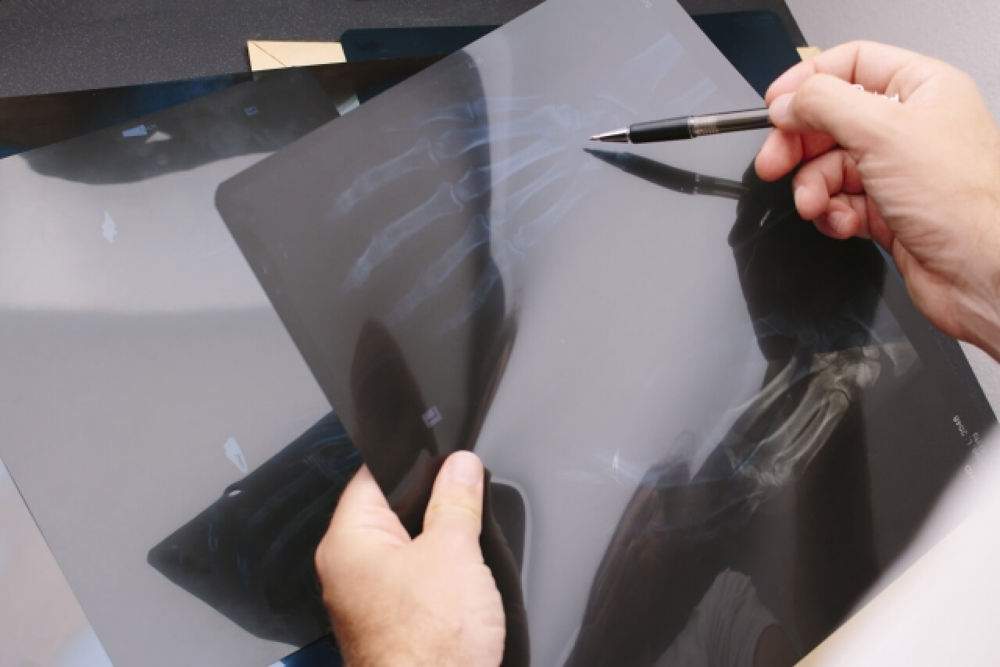
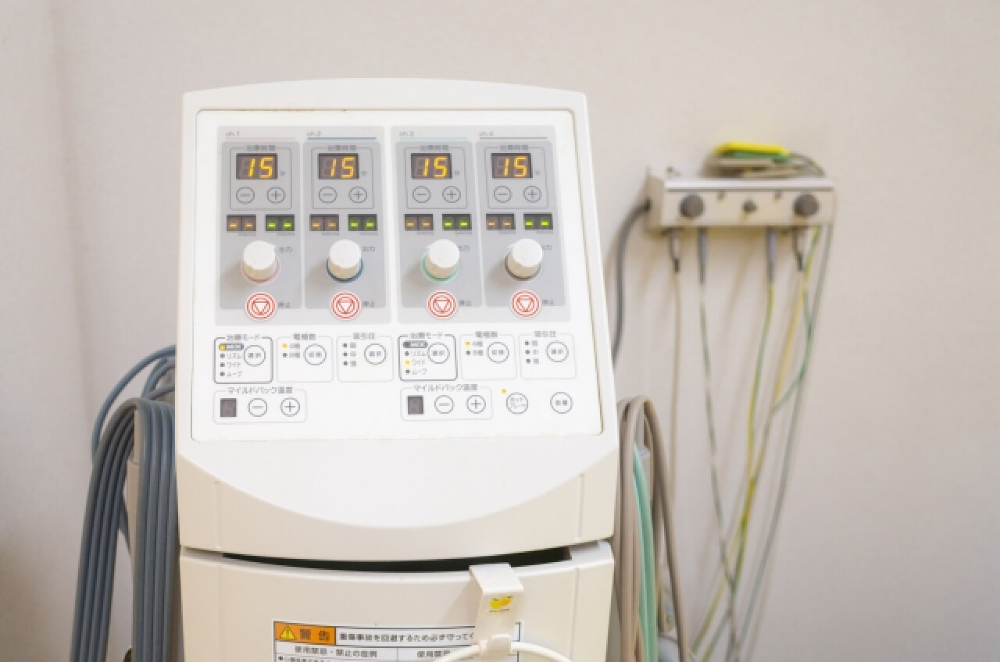
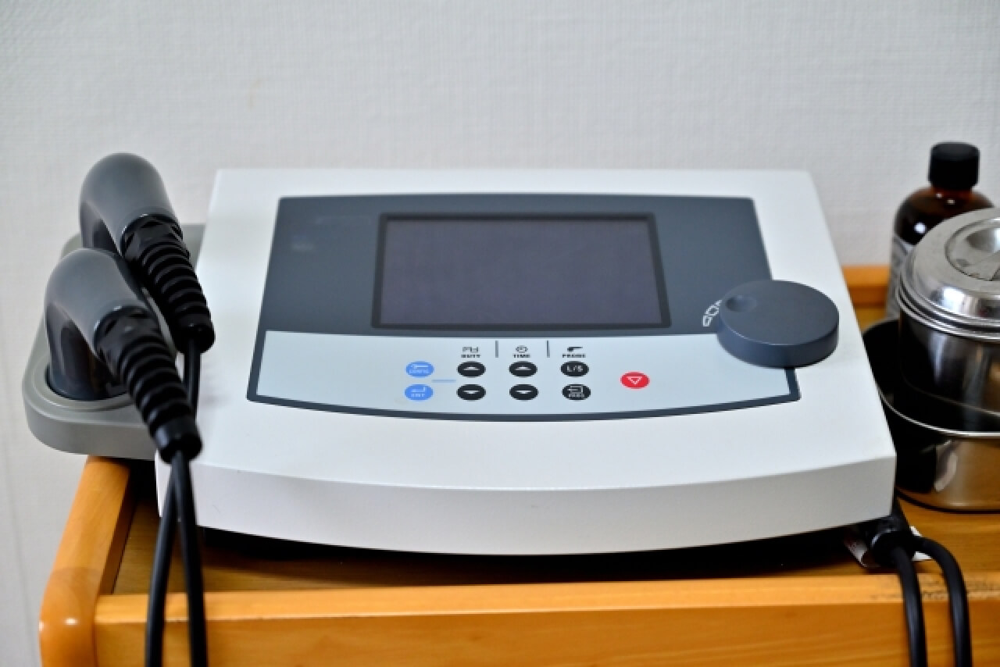

診療案内
-
整形外科
整形外科は、体の運動器に関する診察をおこないます。
骨や関節、筋肉、神経などの様々な部位について、子どもから高齢者まで、個々の患者さまに最適な治療を提供しています。投薬
症状の緩和や治療効果の向上を目的とし、患者さまの状態や症状に応じて、適切な薬剤や投与をおこないます。
院長による注射
痛みや症状の根本原因に対して、注射療法を用いて治療を行っています。痛みを効果的に和らげます。
超音波検査
レントゲン検査ではわからない細かな組織の状態や炎症、軟部組織の損傷などを詳細に診察いたします。
固定術
柔道整復師が患者さまの症状に合わせた固定具を作製いたします。取り外し可能な固定具もご用意しております。
骨粗しょう症
骨密度測定装置で骨密度を測定し、骨粗しょう症の診断・治療・予防をおこなっております。
交通事故・労災
交通事故・労災によるおケガの診療もおこなっております。来院前のお電話もしくは受付の際にお話ください。
-
スポーツ整形外科
整形外科の診察に加え、より専門的な視線でスポーツで同じ動作を繰り返すことにより筋肉や骨を使い過ぎて起こる障害の診療をおこないます。
競技レベル、競技特性、年代に合わせた診療をおこない、早期の競技復帰、再発の予防までしっかりフォローします。主な診療の症状
筋肉痛 / 捻挫 / 肉離れ / つき指 / 野球肘 / テニス肘 / ゴルフ肘 / 膝半月板損傷 / 首・腰の痛み / 投球障害肩 / 野球肘 / 膝靭帯損傷 / ケガの予防
-
リハビリテーション科
患者さまに適した理学療法で症状の早期緩和を目指します。
低周波・超音波・牽引のほかに必要に合わせて理学療法士や柔道整復師によるリハビリテーションもおこないます。
医師の指示にてリハビリが継続となった場合は完全担当制になります。